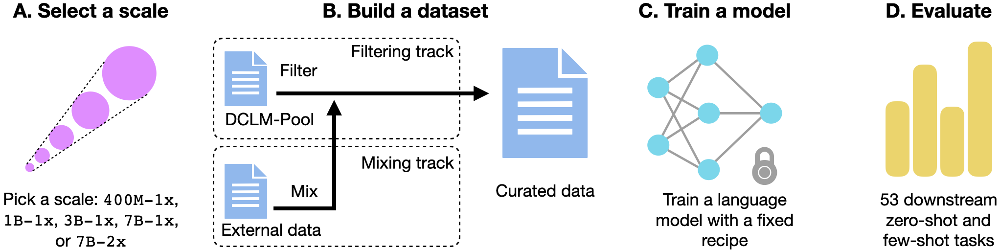
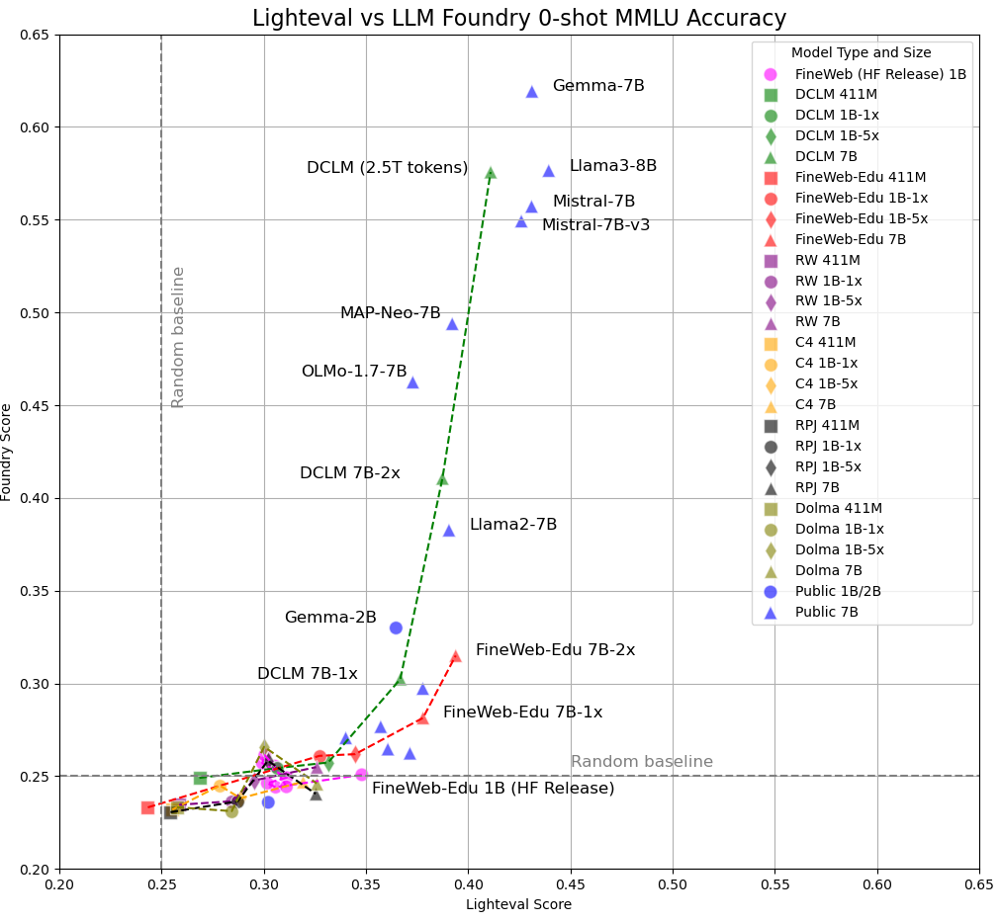

一句话总结:DCLM(DataComp for Language Models)把 LLM 预训练数据 curation 做成可控对比的标准化竞赛——固定模型架构、训练 recipe 与 53 项下游评测,只让参赛者动数据;在此基础上得到的 DCLM-BASELINE 用 2.6T tokens 训出的 7B 模型在 MMLU 上达 64%,显著优于 RefinedWeb、RPv2、Dolma 等公开数据集,接近 Llama 3 8B 而少用 6.6× 算力。
🎯 面试考点(高频):

① 图说明:DCLM 工作流总览。四个方框依次为:(A) 选 compute scale(400M-1x ~ 7B-2x);(B) 在 filtering 或 mixing 赛道里对 DCLM-POOL 做 curation 得到一个数据集;(C) 用标准化训练代码 + 该 scale 固定的超参训一个 decoder-only Transformer;(D) 在 53 项下游任务上评测,产出 CORE / MMLU / EXTENDED 三个分数来给数据集打分。
② 关键数据 / 对照:5 个 scale 的 (N, D) 由 Chinchilla multiplier 决定,$D = 20\cdot N\cdot \text{mult}$;7B-1x 即 138B tokens,7B-2x 即 276B tokens,池大小从 469B 一路放到 15.7T。模型架构、学习率 schedule、tokenizer 都被钉死,变量只有数据。
③ 启示:这是 DCLM 与之前数据工作的关键区别——以前每篇文章都自带一套模型/超参/评测,无法分离"数据贡献"和"训练 trick 贡献"。DCLM 锁住后三个,把变量挤到数据上,使过滤策略可被直接比较。读图要把"benchmark 是固定 recipe 的赛马"刻在脑子里:不同方法的胜负被压在 (B) 这一格的设计空间里。

① 图说明:附录中的某张 ablation 图(原 caption 缺失),典型用法是把若干 fastText / deduplication / mixing 变体的下游分数放在一张图里横向比较,坐标轴一般是"数据变体名"对应"CORE/MMLU"分数。
② 关键数据 / 对照:论文核心数字记住三组——(a) fastText OH-2.5+ELI5 在 1B-1x 上 CORE 30.2,显著优于 Wikipedia / OpenWebText2 / GPT-3 approx 等传统正样本;(b) top-10% 阈值优于 top-15% / top-20%;(c) DCLM-BASELINE 在 7B-2x 上 MMLU 50.8、CORE 48.9,2.6T tokens 训出 64% MMLU。
③ 启示:fastText 这种"小到不能再小"的 bigram 分类器之所以打败 BGE-linear、AskLLM、perplexity filter,核心在正样本选得对——指令格式数据 + ELI5 高赞贴的混合,本身就接近下游评测的 question-answering 分布。这暗示数据过滤的难点不在分类器容量,而在"用什么作为高质参考"。后续工作(Nemotron-CC、WebOrganizer、Olmo-2)也大多沿用 DCLM 的 fastText 路线 + 改进正样本来源。
DataComp-LM: In search of the next generation of training sets for language models. Jeffrey Li*, Alex Fang*, Georgios Smyrnis*, Maor Ivgi*, Matt Jordan, Samir Gadre, Hritik Bansal, Etash Guha, Sedrick Keh, Kushal Arora, Saurabh Garg, Rui Xin, Niklas Muennighoff, Reinhard Heckel, Jean Mercat, Mayee Chen, Suchin Gururangan, Mitchell Wortsman, Alon Albalak, Yonatan Bitton, Marianna Nezhurina, Amro Abbas, Cheng-Yu Hsieh, Dhruba Ghosh, Josh Gardner, Maciej Kilian, Hanlin Zhang, Rulin Shao, Sarah Pratt, Sunny Sanyal, Gabriel Ilharco, Giannis Daras, Kalyani Marathe, Aaron Gokaslan, Jieyu Zhang, Khyathi Chandu, Thao Nguyen, Igor Vasiljevic, Sham Kakade, Shuran Song, Sujay Sanghavi, Fartash Faghri, Sewoong Oh, Luke Zettlemoyer, Kyle Lo, Alaaeldin El-Nouby, Hadi Pouransari, Alexander Toshev, Stephanie Wang, Dirk Groeneveld, Luca Soldaini, Pang Wei Koh, Jenia Jitsev, Thomas Kollar, Alexandros G. Dimakis, Yair Carmon, Achal Dave†, Ludwig Schmidt†, Vaishaal Shankar†. — University of Washington, Apple, Toyota Research Institute, UT Austin, Tel Aviv University, Columbia University, Stanford, UCLA, JSC, LAION, AI2, TUM, CMU, Hebrew University, SambaNova, Cornell, USC, Harvard, UCSB, SynthLabs, Bespokelabs.AI, Contextual AI, DatologyAI. contact@datacomp.ai
We introduce DataComp for Language Models (DCLM), a testbed for controlled dataset experiments with the goal of improving language models. As part of DCLM, we provide a standardized corpus of 240T tokens extracted from Common Crawl, effective pretraining recipes based on the OpenLM framework, and a broad suite of 53 downstream evaluations. Participants in the DCLM benchmark can experiment with data curation strategies such as deduplication, filtering, and data mixing at model scales ranging from 412M to 7B parameters.
As a baseline for DCLM, we conduct extensive experiments and find that model-based filtering is key to assembling a high-quality training set. The resulting dataset, DCLM-BASELINE, enables training a 7B parameter language model from scratch to 64% 5-shot accuracy on MMLU with 2.6T training tokens. Compared to MAP-Neo, the previous state-of-the-art in open-data language models, DCLM-BASELINE represents a 6.6 percentage point improvement on MMLU while being trained with 40% less compute.
Our baseline model is also comparable to Mistral-7B-v0.3 and Llama 3 8B on MMLU (63% & 66%), and performs similarly on an average of 53 natural language understanding tasks while being trained with 6.6× less compute than Llama 3 8B. Our results highlight the importance of dataset design for training language models and offer a starting point for further research on data curation. We release the DCLM benchmark, framework, models, and datasets at https://datacomp.ai/dclm.
我们引入 DataComp for Language Models(DCLM),一个用于受控数据集实验的试验台,目标是改进语言模型。作为 DCLM 的一部分,我们提供一份从 Common Crawl 抽取的 240T tokens 的标准化语料、基于 OpenLM 框架的有效预训练 recipe,以及包含 53 个下游评测的广泛评估套件。DCLM benchmark 的参赛者可以在 412M 到 7B 参数的模型尺度上实验各种数据 curation 策略,例如去重、过滤和数据混合。
作为 DCLM 的基线,我们做了大量实验,并发现基于模型的过滤是组装一个高质量训练集的关键。最终得到的数据集 DCLM-BASELINE 使一个 7B 参数的语言模型从零训练 2.6T tokens,即可在 MMLU 上取得 64% 的 5-shot 准确率。相比于此前开数据语言模型的 SOTA——MAP-Neo,DCLM-BASELINE 在 MMLU 上提升 6.6 个百分点,同时训练算力减少 40%。
我们的基线模型在 MMLU 上也可与 Mistral-7B-v0.3 与 Llama 3 8B 相当(63% 与 66%),并在 53 个自然语言理解任务的平均上表现接近,而所用算力比 Llama 3 8B 少 6.6×。我们的结果凸显了数据集设计对训练语言模型的重要性,并为数据 curation 的进一步研究提供了起点。我们在 https://datacomp.ai/dclm 公开发布 DCLM benchmark、框架、模型与数据集。
Large training datasets are an important driver of progress in the recent language modeling (LM) revolution. As the cost of training state-of-the-art language models continues to grow, researchers increasingly focus not only on scaling but also on improving training datasets that enable efficient generalization on a wide range of downstream tasks. Indeed, there is a growing number of proposals for filtering data, removing (near-) duplicates, finding new data sources, weighting data points, generating synthetic data, and so on.
A key challenge in this emerging research area is a lack of controlled comparisons. While the aforementioned proposals generally use the same evaluation datasets, researchers often compare models that are trained with different architectures, compute, or hyperparameters. Hence, it is often unclear what data curation strategies work best: Are the results of training set A better than training set B because training set A is truly better, or because the model trained on A was combined with a better architecture, learning rate schedule, or more compute? Disentangling the many factors influencing the quality of a language model is crucial to understanding which data curation strategies work best and ultimately building better language models.
Beyond the lack of standardized benchmarks, another challenge for research on training data is that details about training sets are becoming increasingly rare, even for open weight models such as the Llama, Mistral, or Gemma models. For all of these models, the training sets are not publicly available, and the corresponding model documentation only provides a coarse description of the respective training data, if any at all. As a result, it is currently unclear what ingredients constitute a state-of-the-art training set for language models.
大规模训练数据是近期语言模型(LM)革命的一个重要推动力。随着训练 SOTA 语言模型的成本持续增长,研究者们日益将关注点不仅放在扩规模,也放在改进训练数据集以在广泛的下游任务上实现高效泛化。事实上,关于过滤数据、去除(近似)重复、寻找新数据源、加权数据点、生成合成数据等的方案越来越多。
这一新兴研究领域的一个关键挑战是缺乏受控对比。尽管上述方案普遍使用相同的评测数据集,但研究者常常拿"不同架构、不同算力、不同超参数训练出来的模型"互相比较。因此往往不清楚:训练集 A 的结果比训练集 B 好,究竟是因为 A 本身更好,还是因为在 A 上训练时还搭配了更好的架构、学习率 schedule 或更多算力?把影响语言模型质量的众多因素拆解清楚,对于理解"哪些数据 curation 策略最有效"以及最终造出更好的语言模型至关重要。
除了缺乏标准化的 benchmark,数据训练研究的另一个挑战是:训练集的细节越来越罕见,即便是 Llama、Mistral、Gemma 这类开放权重模型也是如此。对所有这些模型,训练集都不公开,相应的模型文档对训练数据也只给出粗略描述(如果给出的话)。因此当前并不清楚一个 SOTA 语言模型训练集究竟由哪些成分构成。
To address these challenges, we introduce DataComp for Language Models (DCLM), the first large-scale benchmark for language model training data curation. In DCLM, researchers propose new training sets and data curation algorithms and then evaluate their datasets by training LMs with a fixed training recipe on their data. By measuring the performance of the resulting model on downstream tasks, researchers can quantify the strengths and weaknesses of the corresponding training set.
To enable DCLM, we contribute a comprehensive experimental testbed. A key component is DCLM-POOL, a corpus of 240 trillion tokens derived from Common Crawl. DCLM-POOL is the largest public corpus for language model training and forms the cornerstone of the DCLM filtering track, where participants aim to curate the best possible training set out of DCLM-POOL. In addition, we provide open-source software for processing large datasets with several filtering approaches.
The high cost of training language models makes it necessary to understand the performance of training recipes across different compute and data scales. Hence, our third contribution is an investigation of scaling trends for dataset design. We find that models as small as 400M parameters can still provide signal on which training sets perform better at larger scales. Based on our experiments, we organize DCLM into five compute scales spanning a range of about 600× in compute from 400M parameter models to over-trained 7B models. This multi-scale design makes DCLM accessible to researchers with varying compute budgets.
为应对这些挑战,我们引入 DataComp for Language Models(DCLM)——首个面向语言模型训练数据 curation 的大规模 benchmark。在 DCLM 中,研究者提出新的训练集与数据 curation 算法,然后用一个固定的训练 recipe 在他们的数据上训练 LM 来评估其数据集。通过测量最终模型在下游任务上的表现,研究者可以量化所对应训练集的优劣。
为了支撑 DCLM,我们贡献了一个完整的实验试验台。一个关键组件是 DCLM-POOL——一份从 Common Crawl 派生的 240T tokens 的语料。DCLM-POOL 是目前最大的公开语言模型训练语料,也是 DCLM filtering 赛道的基石——参赛者目标是从 DCLM-POOL 中 curate 出尽可能好的训练集。此外,我们还提供用若干过滤方案处理大规模数据集的开源软件。
由于训练语言模型成本高,理解训练 recipe 在不同算力和数据尺度上的表现是必要的。因此我们的第三个贡献是对数据集设计的 scaling 趋势的研究。我们发现,小至 400M 参数的模型仍能给出"哪种训练集在更大尺度上更好"的信号。基于实验,我们把 DCLM 组织为 5 个 compute scale,从 400M 参数模型一直到过训练的 7B 模型,跨越约 $600\times$ 的算力范围。这种多尺度设计使 DCLM 对算力预算各异的研究者都可用。
As a starting point for DCLM, we conduct 416 baseline experiments with different training sets and compute scales. Our experiments identify model-based filtering as a key component for effective data curation. We also show that details of the filtering model can have a large impact on performance, ranging from 35% to 44% accuracy on MMLU 5-shot at the 7B parameter scale (280B training tokens). Interestingly, a simple bigram classifier, combined with a carefully selected set of positive and negative examples, performs best among the classifiers we experimented with. In addition, we find that human quality judgments have only limited value in identifying high-quality training data.
Finally, we combine our results into DCLM-BASELINE, a new state-of-the-art public training set for language models. When training a 7B parameter language model on 2.6 trillion tokens using DCLM-BASELINE, the resulting model achieves 64% on MMLU, which is state-of-the-art among open-data models and close to models such as Mistral-7B-v0.3 (63%) or Llama 3 8B (66%) that are trained with up to 6.6× more compute (Llama 3 8B). Compared to Llama 2 7B, training a 7B parameter model on 280B tokens from DCLM-BASELINE achieves 5 pp higher MMLU while being trained with 7× less compute. As our 7B model uses a standard decoder-only Transformer, our results also highlight that a systematic approach to data curation is key to training performant language models.
We publicly release our DCLM framework, models, and training sets at https://datacomp.ai/dclm to enable other researchers to participate in DCLM and to strengthen the empirical foundations for data-centric research on language models.
作为 DCLM 的起点,我们用不同训练集和 compute scale 进行了 416 次基线实验。我们的实验把基于模型的过滤识别为有效数据 curation 的关键组件。我们还证明:过滤模型的细节会对性能产生很大影响——在 7B 参数尺度(280B 训练 tokens)上,MMLU 5-shot 准确率从 $35\%$ 到 $44\%$ 不等。有趣的是,一个简单的 bigram 分类器,搭配精心挑选的正负样本,在我们试过的分类器里表现最好。此外,我们发现人类质量判断在识别高质训练数据方面价值有限。
最终,我们把所有结果汇集为 DCLM-BASELINE——一个新的 SOTA 公开语言模型训练集。用 DCLM-BASELINE 在 2.6T tokens 上训一个 7B 参数的语言模型,所得模型在 MMLU 上取得 64%——在开放数据模型中是 SOTA,并接近用最多 $6.6\times$ 算力训出的 Mistral-7B-v0.3(63%)和 Llama 3 8B(66%)。相比 Llama 2 7B,用 DCLM-BASELINE 的 280B tokens 训一个 7B 模型,MMLU 高 5 个百分点,算力却少 $7\times$。由于我们的 7B 模型用的是标准 decoder-only Transformer,我们的结果也凸显:系统化的数据 curation 方法是训练高性能语言模型的关键。
我们在 https://datacomp.ai/dclm 公开发布 DCLM 框架、模型和训练集,以便其他研究者参与 DCLM,并强化语言模型 data-centric 研究的实证基础。
Data curation for language models. To collect large datasets for training LMs, researchers typically resort to web crawls. However, these crawls often contain considerable amounts of undesirable content, necessitating curation to develop high-quality training data. Most data curation efforts focus on methods for improving model performance, including filtering by language, heuristic-based filtering, quality filtering, data deduplication and mixing. While prior work examines a limited set of filters, we conduct the largest public investigation of data curation, resulting in a strong DCLM-BASELINE dataset. Since the initial release of DCLM, newer works such as WebOrganizer, Nemotron-CC, and Olmo-2 have also built upon our benchmark or curation strategies to further advance the state-of-the-art for LLM pre-training datasets.
语言模型的数据 curation。为了收集用于训练 LM 的大规模数据集,研究者通常诉诸网络爬取。然而这些爬取里往往含有大量不可取的内容,因而需要 curation 来产出高质量训练数据。多数数据 curation 工作聚焦于提升模型性能的手段,包括按语言过滤、启发式过滤、质量过滤、数据去重和数据混合。先前工作只考察了有限的过滤集合,而我们做了迄今最大规模的公开数据 curation 调查,产出强力的 DCLM-BASELINE 数据集。自 DCLM 首次发布以来,WebOrganizer、Nemotron-CC 与 Olmo-2 等更新工作也基于我们的 benchmark 或 curation 策略进一步推进了 LLM 预训练数据集的 SOTA。
Open-source datasets. As the scale of LMs has increased over the past years, the community has curated larger datasets to match. Early works include the C4 dataset with 160 billion (B) tokens and The Pile with 300B tokens. More recently, RefinedWeb contains 600B tokens, Dolma 3 trillion (T) tokens, FineWeb 15T tokens, and RPv2 30T tokens. There are also large domain-specific datasets, such as the code-focused StackV2 with 900B tokens, as well as high-quality filtered subsets such as FineWeb-Edu with 1.3T tokens. We include performance comparisons with various datasets in Figure 1 and examine FineWeb's LightEval evaluation framework more closely in Appendix G. We release the largest pool of raw text data to date with 240T web-crawled tokens. We also release DCLM-BASELINE, a 3.8T token high-quality dataset from our pool that yields better models than prior datasets.
开源数据集。随着过去几年 LM 规模的增长,社区也 curate 出与之匹配的更大数据集。早期工作包括 1600 亿(B)tokens 的 C4 与 3000 亿 tokens 的 The Pile。更近期的有 6000 亿 tokens 的 RefinedWeb、3 万亿(T)tokens 的 Dolma、15T tokens 的 FineWeb,以及 30T tokens 的 RPv2。也有大型领域专属数据集,例如以代码为主的 900B tokens 的 StackV2,以及 1.3T tokens 的高质过滤子集 FineWeb-Edu。我们在图 1 中给出与各种数据集的性能对比,并在附录 G 中更仔细地考察 FineWeb 的 LightEval 评测框架。我们发布迄今最大的原始文本池,共 240T web 爬取 tokens。我们还发布 DCLM-BASELINE——一个从我们的池中得到的 3.8T tokens 高质数据集,其训出的模型优于先前数据集。
Data-centric benchmarks. Past work on benchmarking data improvements includes dataset distillation, curriculum learning, and transfer learning. In DataComp and DataPerf, participants iterate on a dataset with a fixed model and training recipe for vision, vision-language, and speech tasks. For LMs, the Data-Juicer effort includes benchmarks for cleaning and mixing fine-tuning data while the BabyLM challenge Loose track focuses on efficient development of 125M to 220M parameter LMs pretrained on 10M to 100M tokens. With a 240T token pool and 7B models, DCLM is the largest data-centric benchmark for language models.
以数据为中心的 benchmark。过去对数据改进做 benchmark 的工作包括数据集蒸馏、课程学习与迁移学习。在 DataComp 与 DataPerf 中,参赛者在固定的模型与训练 recipe 下迭代视觉、视觉-语言、语音任务的数据集。对于 LM,Data-Juicer 工作包含清洗与混合微调数据的 benchmark,而 BabyLM 挑战的 Loose 赛道则关注用 10M~100M tokens 预训练 125M~220M 参数 LM 的高效开发。有 240T tokens 的池和 7B 模型,DCLM 是面向语言模型最大的以数据为中心的 benchmark。
This section describes the main components of DCLM. We start with DCLM-POOL, the raw text corpus underlying our benchmark (§3.1). We then describe the DCLM workflow, visualized in Figure ②: selecting a competition scale (§3.2), curating a dataset by filtering DCLM-POOL and potentially mixing in other sources (§3.3), training a model with fixed hyperparameters (§3.4), and evaluating the model to score the dataset (§3.5).
§3.1 DCLM-POOL. DCLM-POOL is an unfiltered web-text corpus comprised of all Common Crawl data prior to 2023. Based on §4.2, we re-extract text from HTML using resiliparse instead of using Common Crawl's pre-extracted text. DCLM-POOL contains 200B documents (370TB after gzip compression), resulting in 240T GPT-NeoX tokens.
Decontamination. Test set samples often contaminate language model training sets; however, the effect of such samples on downstream performance remains largely unclear. To allow researchers to better understand contamination, we release decontamination tooling instead of decontaminating DCLM-POOL directly. We implement our own decontamination process for two popular tasks, MMLU and HellaSwag, and provide tooling to examine datasets for overlap with all of our test sets. We ask all submissions to disclose a decontamination report and avoid using highly-contaminated data.
本节描述 DCLM 的主要组件。我们先介绍 DCLM-POOL(§3.1)——本 benchmark 的底层原始文本语料。然后描述 DCLM 工作流(图 ② 可视化):选择竞赛 scale(§3.2)、通过过滤 DCLM-POOL 并可能混入其它来源来 curate 数据集(§3.3)、用固定超参训练模型(§3.4),以及评测模型以给数据集打分(§3.5)。
§3.1 DCLM-POOL。DCLM-POOL 是一份未过滤的 web 文本语料,由 2023 年之前的全部 Common Crawl 构成。基于 §4.2 的结论,我们用 resiliparse 从 HTML 重抽取文本,而非使用 Common Crawl 预抽好的文本。DCLM-POOL 包含 200B 文档(gzip 压缩后 370TB),共得到 240T GPT-NeoX tokens。
去污染。测试集样本经常污染语言模型训练集;但这些样本对下游表现的影响在很大程度上仍不清楚。为了让研究者更好地理解污染,我们发布去污染工具,而不是直接对 DCLM-POOL 做去污染。我们为两个流行任务 MMLU 与 HellaSwag 实现了自家的去污染流程,并提供工具用于检查数据集与全部测试集的重叠。我们要求所有提交都披露一份去污染报告,并避免使用高度污染的数据。
§3.2 Competition scales. To ensure DCLM is accessible to researchers with different compute constraints and to facilitate the study of scaling trends, we create different competition scales spanning three orders of compute magnitude. Each scale (i.e., 400M-1x, 1B-1x, 3B-1x, 7B-1x, and 7B-2x) specifies the number of model parameters (e.g., 7B) and a Chinchilla multiplier (e.g., 1x). The number of training tokens for each scale is $D = 20 \times N \times \text{mult}$ so that a multiplier of 1x corresponds to a compute allocation near-optimal under Hoffmann et al.
A potential pitfall in our multi-scale design is that the ranking of data curation methods may change when increasing the compute scale. To better understand this concern, we plot the performance of 10 methods at the 7B-1x scale as a function of their performance at smaller scales (Figure 3). We find high rank correlation between the results for smaller scales (400M-1x, 1B-1x, 3B-1x) and those for the larger 7B-1x scale (Pearson's $r = 0.838$, $r = 0.956$, $r = 0.982$ respectively), suggesting better curation strategies at smaller scales transfer to larger scales.
§3.2 竞赛 scale。为了让 DCLM 对算力预算不同的研究者都可访问、并便于研究 scaling 趋势,我们设计了跨越 3 个数量级算力的 5 个竞赛 scale。每个 scale(即 400M-1x、1B-1x、3B-1x、7B-1x、7B-2x)指定模型参数数(如 7B)与 Chinchilla 乘子(如 1x)。每个 scale 的训练 token 数为 $D = 20 \times N \times \text{mult}$,使得 1x 乘子对应 Hoffmann 等人发现的近最优算力分配。
我们多尺度设计的一个潜在风险是:数据 curation 方法的排名可能随算力 scale 增大而变。为了更好地理解这个问题,我们把 10 种方法在 7B-1x scale 的表现作为它们在更小 scale 表现的函数画出(图 3)。我们发现小 scale(400M-1x、1B-1x、3B-1x)与 7B-1x 之间的排名相关性很高(Pearson 系数分别为 $r = 0.838$、$r = 0.956$、$r = 0.982$),说明在小 scale 上更优的 curation 策略能迁移到大 scale。
§3.3 Benchmark tracks. After choosing a scale, participants choose one of two tracks. (i) In the filtering track, participants propose algorithms to select training data from a candidate pool. We start with five pools, one for each scale, which are random document subsets of DCLM-POOL. We restrict initial pool sizes by scale to encourage scalable filtering strategies and reflect realistic data download and storage constraints. (ii) In the mixing track, a submission may combine documents from DCLM-POOL with those from any external sources (i.e., outside of Common Crawl). For instance, participants can add in documents directly curated from StackExchange and Wikipedia data dumps (as is done by RPJ) or perhaps even their own custom crawl.
§3.4 Training. To isolate the effect of dataset interventions, we fix a training recipe at each scale. Based on prior ablations on model architectures and training, we adopt a decoder-only Transformer (e.g., GPT-2, Llama), implemented in OpenLM. We also provide unified data processing utilities.
§3.5 Evaluation. Our full evaluation suite, based on LLM-Foundry, contains 53 downstream tasks suitable for base model evaluation (i.e., without finetuning): from question answering to open-ended generation formats, considering varied domains like mathematics, text-book knowledge, and common-sense reasoning. To evaluate data curation algorithms, we focus on three main performance metrics. First, we consider MMLU 5-shot accuracy, which is widely used to compare state-of-the-art models like GPT-4 and Llama 3 70B. Second, we propose the CORE centered accuracy, computed over a subset of 22 tasks (e.g., HellaSwag and ARC-E) that provide a low-variance signal even at small scales, linearly rescaling the accuracy per task so that 0 corresponds to random guessing and 1 corresponds to perfect accuracy. Finally, we report the EXTENDED centered accuracy, which averages the centered performance for all of our 53 tasks.
§3.3 Benchmark 赛道。选定 scale 后,参赛者从两个赛道中选一个。(i)在 filtering 赛道,参赛者提出从候选池中选择训练数据的算法。我们起始提供 5 个池,每个 scale 一个,均为 DCLM-POOL 的随机文档子集。我们按 scale 限制初始池大小,以鼓励可扩展的过滤策略,并反映真实的数据下载和存储约束。(ii)在 mixing 赛道,提交可以把 DCLM-POOL 的文档与任意外部来源(即 Common Crawl 之外)的文档组合。例如参赛者可直接加入从 StackExchange 与 Wikipedia data dump 中 curate 的文档(如 RPJ 所做),甚至自定义爬取。
§3.4 训练。为了隔离数据干预的效果,我们在每个 scale 上固定一个训练 recipe。基于先前对模型架构和训练的 ablation,我们采用 decoder-only Transformer(如 GPT-2、Llama),由 OpenLM 实现。我们还提供统一的数据处理工具。
§3.5 评测。我们基于 LLM-Foundry 的完整评测套件包含 53 个适合 base model 评测(即无需微调)的下游任务:涵盖问答到开放式生成等格式,跨越数学、教科书知识、常识推理等多种领域。为评估数据 curation 算法,我们关注三个主要性能指标。第一,我们考虑 MMLU 5-shot 准确率,它被广泛用于比较 GPT-4、Llama 3 70B 等 SOTA 模型。第二,我们提出 CORE 中心化准确率,在 22 个任务(如 HellaSwag、ARC-E)的子集上计算——这些任务即便在小 scale 上也给出低方差信号——对每个任务线性重缩放使 0 对应随机猜测、1 对应完美准确率。最后,我们报告 EXTENDED 中心化准确率——对全部 53 个任务的中心化表现取平均。
We now show how the DCLM workflow can lead to high-quality datasets and quantify the effects of data curation methods. This section describes the process of converting Common Crawl into our dataset, DCLM-BASELINE. We first evaluate open-source datasets as a starting point (§4.1). Next, we experiment with alternatives for several key phases of dataset construction: text extraction (§4.2), deduplication (§4.3), and model-based filtering (§4.4). We then experiment with mixing in high-quality sources (§4.5) and provide a contamination analysis (§4.6).
§4.1 Evaluating existing datasets. We evaluate several well-known open-source datasets (C4, RefinedWeb, RedPajama, and Dolma-V1). While all four datasets use various heuristic filters and data cleaning steps, we find that RefinedWeb performs the best on our CORE and EXTENDED metrics at the 7B-1x scale (CORE: C4 34.2, Dolma-V1 35.0, RedPajama 35.3, RefinedWeb 36.9). Interestingly, RefinedWeb is solely filtered from Common Crawl, unlike RedPajama and Dolma-V1, which additionally mix in curated, "high-quality" sources like Wikipedia. The comparison suggests the relative strength of filtering. Takeaway: For DCLM-BASELINE we adopt RefinedWeb's heuristic filters.
本节展示 DCLM 工作流如何产出高质数据集,并量化各种数据 curation 方法的效果。本节描述把 Common Crawl 转为我们数据集 DCLM-BASELINE 的过程。我们先把开源数据集作为起点来评估(§4.1)。然后对数据集构造的几个关键阶段实验替代方案:文本抽取(§4.2)、去重(§4.3)与基于模型的过滤(§4.4)。接着我们实验混入高质源(§4.5),并给出污染分析(§4.6)。
§4.1 评估已有数据集。我们评估几个知名开源数据集(C4、RefinedWeb、RedPajama、Dolma-V1)。尽管四个数据集都用了各种启发式过滤和清洗步骤,我们发现 RefinedWeb 在 7B-1x scale 的 CORE 与 EXTENDED 指标上表现最好(CORE:C4 34.2、Dolma-V1 35.0、RedPajama 35.3、RefinedWeb 36.9)。有趣的是,RefinedWeb 仅从 Common Crawl 过滤而成,而 RedPajama 和 Dolma-V1 还混入了 Wikipedia 等经 curate 的"高质"源。这一对比暗示过滤本身的相对强度。结论:对 DCLM-BASELINE 我们采用 RefinedWeb 的启发式过滤器。
§4.2 Text extraction. Text extraction is a crucial early processing step that pulls content from raw HTML. To understand its effect, we compare three approaches: resiliparse, trafilatura (used by RefinedWeb), and the Common Crawl-provided WET files that contain pre-extracted text. We then apply RefinedWeb's heuristic quality filters to each. We find both resiliparse and trafilatura improve CORE by at least 2.5 points over the WET extraction. This is significant because most open source datasets, including C4, RedPajama, and Dolma-V1, use WET files, which could partially explain their worse performance. While resiliparse and trafilatura have similar downstream performance, resiliparse is 8× faster to run and hence more practical for large-scale processing. Takeaway: We use resiliparse for DCLM-POOL.
§4.3 Deduplication. Web-crawled datasets often contain many duplicate or near-duplicate data strings. Removing these duplicates serves the dual purpose of improving performance by reducing memorization and increasing data diversity. For deduplication, we explore MinHash, as part of a suffix array pipeline, and near-duplicate Bloom filtering, which modifies an exact document and paragraph deduplication scheme. We find that both approaches provide comparable downstream performance: within 0.2 CORE percentage points at the 7B-2x scale. However, our modified Bloom filter scales more easily to datasets surpassing 10TB. Takeaway: We use a Bloom filter for DCLM-BASELINE and MinHash for other experiments.
§4.2 文本抽取。文本抽取是把原始 HTML 中的内容拉出来的关键早期步骤。为了理解其影响,我们对比三种方法:resiliparse、trafilatura(RefinedWeb 使用)与 Common Crawl 自带的 WET 文件(含预抽取的文本)。然后对每种结果应用 RefinedWeb 的启发式质量过滤器。我们发现 resiliparse 和 trafilatura 都比 WET 抽取在 CORE 上提升至少 2.5 个点。这一点很重要,因为大多数开源数据集(包括 C4、RedPajama、Dolma-V1)都使用 WET 文件,这可能部分解释了它们较差的性能。虽然 resiliparse 与 trafilatura 的下游性能相近,但 resiliparse 运行快 8×,因此在大规模处理上更实用。结论:DCLM-POOL 使用 resiliparse。
§4.3 去重。web 爬取的数据集常包含大量重复或近重复字符串。去除这些重复有双重作用:既通过减少记忆来提升性能,又增加数据多样性。我们考察 MinHash(作为 suffix array 流水线的一部分)和近重复 Bloom 过滤(它修改了一种精确文档与段落去重方案)。我们发现两种方法的下游性能相近:在 7B-2x scale 上 CORE 相差不到 0.2 个百分点。不过我们改进的 Bloom 过滤更易扩展到 10TB 以上的数据集。结论:DCLM-BASELINE 用 Bloom 过滤,其它实验用 MinHash。
§4.4 Model-based quality filtering. Recent literature indicates that training models to serve as quality filters leads to downstream improvements. We compare many strategies: 1) PageRank score filtering; 2) Semantic Deduplication (SemDedup); 3) linear classifiers fit on pre-trained BGE text embeddings; 4) AskLLM which prompts an LM to see if a document is helpful; 5) Perplexity filtering where we retain low perplexity sequences following CCNet; 6) Top-k average logits; and 7) fastText binary classifiers to distinguish data quality. For training classifiers, we train on $\sim$400k documents split equally between positive and negative classes. We compare the approaches and find that fastText-based filtering outperforms all other approaches (fastText OH-2.5+ELI5 30.2 CORE vs. Top-k avg logits 29.2, Perplexity 29.0, AskLLM 28.6, BGE-linear 27.2, SemDedup 27.1, RefinedWeb 27.5, PageRank 26.1 at 1B-1x).
Text classifier ablations. To better understand the limits of fastText, we train several variants, exploring different choices for the reference data (i.e., the examples given positive labels), filtering threshold, and feature space. For reference data, we considered commonly used sources like Wikipedia, OpenWebText2, and RedPajama-books, following the reference data used for GPT-3. We also try a novel approach, using instruction-formatted data, drawing examples from OpenHermes 2.5 (OH-2.5) and high-scoring posts from the r/ExplainLikeImFive (ELI5) subreddit. Overall, we find, when controlling for other hyperparameters, the fastText OH-2.5+ELI5 approach gives a 3.5 percentage point lift on CORE compared to the other more conventional choices. We also observe that using a fairly strict threshold, which keeps the top-10% of examples, helps over more permissive top-15% and top-20% thresholds. Takeaway: For DCLM-BASELINE we use fastText OH-2.5+ELI5 classifier score to keep the top 10% of documents.
§4.4 基于模型的质量过滤。近期文献表明,把模型训练成质量过滤器能带来下游提升。我们比较多种策略:1)PageRank 分数过滤;2)语义去重(SemDedup);3)在预训练 BGE 文本嵌入上拟合的线性分类器;4)AskLLM(用 LM 提示判断文档是否有用);5)Perplexity 过滤——保留低困惑度序列,依 CCNet;6)Top-k 平均 logits;以及 7)fastText 二元分类器以区分数据质量。训练分类器时,我们在 $\sim$400k 文档上训练,正负样本各占一半。我们比较这些方法,发现 基于 fastText 的过滤优于其它所有方法(1B-1x 上 CORE:fastText OH-2.5+ELI5 为 30.2,而 Top-k avg logits 29.2、Perplexity 29.0、AskLLM 28.6、BGE-linear 27.2、SemDedup 27.1、RefinedWeb 27.5、PageRank 26.1)。
文本分类器 ablation。为了更好地理解 fastText 的上限,我们训练了多个变体,探索参考数据(即正样本)、过滤阈值与特征空间的不同选择。在参考数据上,我们考虑了 Wikipedia、OpenWebText2、RedPajama-books 等常用来源(沿用 GPT-3 的参考数据)。我们还尝试一种新做法——使用指令格式数据,从 OpenHermes 2.5(OH-2.5) 与 r/ExplainLikeImFive(ELI5) 子版块的高赞贴中取样本。总体上我们发现,在控制其它超参的前提下,fastText OH-2.5+ELI5 方法相比传统选择在 CORE 上提升 3.5 个百分点。我们还观察到,采用相当严格的阈值——只保留 top-10% 样本——优于较宽松的 top-15% 与 top-20% 阈值。结论:DCLM-BASELINE 使用 fastText OH-2.5+ELI5 分类器分数,保留 top 10% 的文档。
§4.5 Dataset mixing. Often, Common Crawl (CC) is combined with other data sources that are considered high-quality (e.g., Wikipedia, StackExchange, and peS2o). Since DCLM participants can include additional data sources in our mixing track, we examined the potential benefits of adding high-quality sources to training sets derived from Common Crawl only. We compare a model trained on 100% filtered CC data to models trained with the mixing ratios from Llama 1 and RPJ: 67% CC, and 33% from Wikipedia, Books, Stack Exchange, arXiv, and GitHub. For the CC component, we consider different variants: a subset of our DCLM-BASELINE, RPJ's CC portion, RefinedWeb, and C4. The results show that mixing improves performance for the lower-performing CC subsets (C4 +2.2, RPJ-CC +1.7, RefinedWeb +1.4 CORE). In the case of DCLM-BASELINE, however, mixing actually hurts performance on average ($-1.2$ CORE), which suggests it can be counterproductive given performant filtering.
§4.6 Decontamination. Here, we examine whether contamination of our pretraining data with evaluation data influences our results for DCLM-BASELINE. We focus on MMLU and HellaSwag. Specifically, we attempt to remove examples from these two test sets that exist in DCLM-BASELINE. For both, we flag pages that contain the question text along with at least one of the corresponding answer options. We then train a 7B-2x model with our DCLM-BASELINE without the detected overlaps. This does not lead to decreases in model performance (MMLU 51.8 → 52.7, HellaSwag 77.9 → 78.4), so our performance gains on these two tasks are not likely to be caused by increased presence of their test examples in our dataset. We also apply the same strategy to Dolma-V1.7 and FineWeb-Edu and observe DCLM-BASELINE has roughly similar contamination stats.
§4.5 数据集混合。Common Crawl(CC)常会与被认为高质的其它数据源(如 Wikipedia、StackExchange、peS2o)组合。由于 DCLM 参赛者可以在 mixing 赛道里加入额外数据源,我们考察了在只用 Common Crawl 派生训练集上额外加入高质源的潜在收益。我们比较:在 100% 过滤后的 CC 数据上训练的模型,与按 Llama 1 / RPJ 的混合比例(67% CC + 33% 来自 Wikipedia/Books/StackExchange/arXiv/GitHub)训练的模型。对 CC 部分,我们考虑不同变体:DCLM-BASELINE 子集、RPJ 的 CC 部分、RefinedWeb、C4。结果显示,对表现较弱的 CC 子集,混入提升了性能(C4 +2.2、RPJ-CC +1.7、RefinedWeb +1.4 CORE)。但在 DCLM-BASELINE 上,混合反而损害了平均性能($-1.2$ CORE),说明在过滤已经很强的情况下,混入高质源可能适得其反。
§4.6 去污染。本节考察预训练数据中的评测数据污染是否影响 DCLM-BASELINE 的结果。我们聚焦 MMLU 和 HellaSwag。具体地,我们尝试从 DCLM-BASELINE 中移除来自这两个测试集的样本。对两者,我们将"页面同时包含问题文本与至少一个对应选项"的页面标记并移除。然后我们用去除了检测重叠后的 DCLM-BASELINE 训练 7B-2x 模型。结果并没有导致性能下降(MMLU 51.8 → 52.7,HellaSwag 77.9 → 78.4),因此我们在这两个任务上的性能提升不太可能是测试样本在数据集中存在量增多所致。我们对 Dolma-V1.7 和 FineWeb-Edu 也施加同样策略,观察到 DCLM-BASELINE 的污染统计与它们大致相似。
Here, we test if datasets that perform well on the DCLM benchmark also maintain their strength with an order of magnitude more compute. To ensure our trained model is broadly useful, including for math and coding tasks, we combine our 3.8T DCLM-BASELINE with the StarCoder and ProofPile2 datasets to arrive at a 4.1T token dataset. We train a 7B model for 2.5T tokens on this dataset with the same hyperparameters as our largest competition scale except for two separate cool-down phases for the 200B and 270B tokens on a modified distribution that was 70% DCLM-BASELINE with a tighter fastText threshold, and 30% math datasets.
We then take a "model soup" of these two separate cool-downs. Finally, we adopt the continual pretraining methodology from Pouransari et al. for 100B tokens on the same distribution to increase the context length from 2048 to 8192. We show that our model outperforms all 7B models trained on public training sets and approaches closed-data models trained for more tokens such as Llama-8B, Mistral-7B, and Gemma-7B. Additionally, our model achieves strong instruction-tuning (IT) performance: after instruction tuning on publicly available IT datasets, our model maintains most of its benchmark performance and achieves an AlpacaEval2.0 LC Win-rate of 16.6, which outperforms Gemma-Instruct (10.4), while approaching the strong performance of Mistral-v0.2-7B (17.1) and Llama3-Instruct (22.9). Finally, we show results from training a 1B model on 4.3T tokens from DCLM-BASELINE, StarCoder and ProofPile2 combined, resulting in a strong, small model that outperforms prior small models including Gemma-2B and Qwen2-1.5B.
本节检验在 DCLM benchmark 上表现好的数据集,在算力大一个数量级时是否仍然强。为了让训练出的模型在数学和代码任务上也广泛有用,我们把 3.8T 的 DCLM-BASELINE 与 StarCoder、ProofPile2 数据集组合,得到 4.1T tokens 的数据集。我们在该数据集上训一个 7B 模型共 2.5T tokens,超参与最大竞赛 scale 相同,只多了两个独立的 cool-down 阶段(各 200B 与 270B tokens),其分布修改为 70% DCLM-BASELINE(用更紧的 fastText 阈值)+ 30% 数学数据集。
然后我们对这两个独立 cool-down 取 "model soup"。最后,我们沿用 Pouransari 等人的持续预训练方法,在同一分布上再做 100B tokens 训练,把上下文长度从 2048 扩到 8192。我们证明所得模型超过所有在公开训练集上训练的 7B 模型,并接近用更多 tokens 训练的闭源数据模型(如 Llama-8B、Mistral-7B、Gemma-7B)。此外,我们的模型有出色的指令微调(IT)表现:用公开 IT 数据集做指令微调后,模型基本保住了 benchmark 表现,并取得 16.6 的 AlpacaEval2.0 LC Win-rate,超过 Gemma-Instruct(10.4),接近 Mistral-v0.2-7B(17.1)与 Llama3-Instruct(22.9)。最后,我们展示用 DCLM-BASELINE + StarCoder + ProofPile2 共 4.3T tokens 训一个 1B 模型的结果,得到一个强力小模型,优于此前的小模型(包括 Gemma-2B、Qwen2-1.5B)。
We introduced the DCLM testbed and demonstrated how it leads to new state-of-the-art training sets. Our exploration of the dataset design space is only the beginning and has clear limitations. Due to compute constraints, we could only ablate design dimensions individually and could not test all approaches at larger scales nor train models beyond 7B parameters. We also could not sufficiently explore run-to-run variation. Moreover, there are many variations of DCLM-BASELINE that we did not explore, such as alternatives to sharded deduplication and using differently trained filtering models. We also conducted most of our experiments with only one tokenizer (GPT-NeoX), and other tokenizers may perform better on multilingual tasks or math.
While models trained on DCLM-BASELINE are competitive on common language understanding tasks, they currently do not perform as well on code and math. We view this as a consequence of our focus on language understanding in the first version of DCLM, and not an inherent limitation of our benchmark or dataset. Prior work has shown that adding specific training data and post-training methods for code and math can substantially improve models on those domains; combining DCLM-BASELINE with these domain-specific training sets and extending DCLM to cover code and math are interesting future directions. Other important dimensions to expand DCLM along are fairness, multilinguality, and safety. We hope that our open-source testbed can strengthen data-centric research in these directions as well.
我们引入了 DCLM 试验台,并展示了它如何带来新的 SOTA 训练集。我们对数据集设计空间的探索仅是开始,有明显的局限。受算力限制,我们只能对各设计维度逐一 ablation,无法把所有方案都在更大 scale 上测试,也无法训练超过 7B 参数的模型。我们也无法充分研究 run-to-run 的方差。此外,DCLM-BASELINE 还有许多我们未探索的变体,例如分片去重的替代方案、以及使用不同方式训练的过滤模型。我们多数实验只用了一种 tokenizer(GPT-NeoX);其它 tokenizer 在多语言任务或数学上可能更好。
尽管在 DCLM-BASELINE 上训练的模型在常见语言理解任务上有竞争力,但目前在代码和数学上表现欠佳。我们认为这是 DCLM 第一版聚焦语言理解的结果,而非本 benchmark 或数据集的固有局限。先前工作已证明,加入针对代码与数学的训练数据和后训练方法可以显著提升模型在这些领域的表现;把 DCLM-BASELINE 与这些领域专属训练集组合、并将 DCLM 扩展到代码与数学,是有趣的未来方向。其它重要的扩展维度是公平性、多语言性、安全性。我们希望我们的开源试验台也能在这些方向上强化以数据为中心的研究。
共 200+ 篇引用,涵盖 RefinedWeb、Dolma、FineWeb、RPv2、C4、The Pile、Chinchilla、Llama 系列、SemDedup、CCNet、fastText、OpenHermes、MMLU、HellaSwag 等。完整列表见原文 References 节(p.12 起,长 60 页)。